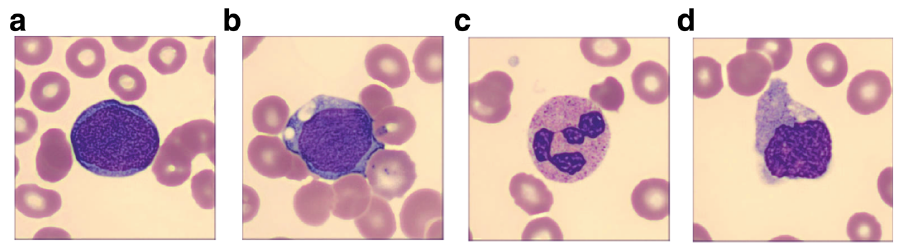
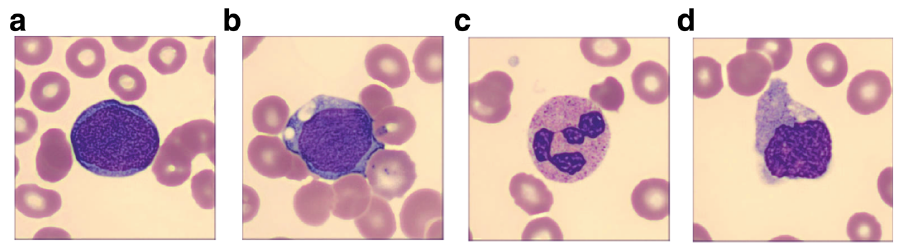

Code
knitr::include_graphics("img/blast_example_stimuli.png")
This chapter presents a complete worked example of applying the diffusion model to a two-choice task. The data for this example were reported originally by Trueblood et al. (2018).
knitr::include_graphics("img/blast_example_stimuli.png")
download.file("https://github.com/gregcox7/choice_rt_models/raw/refs/heads/main/data/blast_data.rdata", "blast_data.rdata")
load("blast_data.rdata")glimpse(blast_data)Rows: 21,628
Columns: 15
$ dateCompleted <chr> "30/6/2017 @ 10:15:24", "30/6/2017 @ 10:15:26", "30/6…
$ block <int> 2, 2, 2, 2, 2, 2, 2, 2, 2, 2, 2, 2, 2, 2, 2, 2, 2, 2,…
$ blockType <fct> Speed, Speed, Speed, Speed, Speed, Speed, Speed, Spee…
$ trial <int> 1, 2, 3, 4, 5, 6, 7, 8, 9, 10, 11, 12, 13, 15, 16, 17…
$ stimulus <chr> "nonBlastEasy/SNE_25598565.jpg", "blastHard/BL_406213…
$ difficulty <fct> Easy, Hard, Easy, Hard, Hard, Easy, Easy, Hard, Easy,…
$ response <fct> Non-blast, Blast, Blast, Blast, Non-blast, Non-blast,…
$ rt <dbl> 0.662, 0.496, 0.528, 0.431, 0.817, 0.495, 0.540, 0.68…
$ correct_response <fct> Non-blast, Blast, Blast, Blast, Blast, Non-blast, Non…
$ bias_shown <fct> Bias not shown, Bias not shown, Bias not shown, Bias …
$ subject <chr> "M002", "M002", "M002", "M002", "M002", "M002", "M002…
$ group <fct> Experienced, Experienced, Experienced, Experienced, E…
$ nomt_corr <dbl> 99, 99, 99, 99, 99, 99, 99, 99, 99, 99, 99, 99, 99, 9…
$ nomt_n <int> 108, 108, 108, 108, 108, 108, 108, 108, 108, 108, 108…
$ nomt <dbl> 0.9166667, 0.9166667, 0.9166667, 0.9166667, 0.9166667…blast_data_cond <- blast_data %>%
filter(group == "Inexperienced", subject == "M003", blockType == "Accuracy")fit_model_nosv <- fit_wienr(rt = blast_data_cond$rt, response = (blast_data_cond$response == "Blast") + 1, fit_sv = F, fit_sw = F, fit_st0 = F, optim_control = list(trace = 1))
fit_model_wsv <- fit_wienr(rt = blast_data_cond$rt, response = (blast_data_cond$response == "Blast") + 1, fit_sv = T, fit_sw = F, fit_st0 = F, optim_control = list(trace = 1))to_fit <- expand_grid(fit_sv = c(TRUE, FALSE), fit_sw = c(TRUE, FALSE), fit_st0 = c(TRUE, FALSE)) %>%
mutate(nll = NA, np = NA)
fits <- list()
for (i in 1:nrow(to_fit)) {
fits[[i]] <- fit_wienr(rt = blast_data_cond$rt, response = (blast_data_cond$response == "Blast") + 1, fit_sv = to_fit$fit_sv[i], fit_sw = to_fit$fit_sw[i], fit_st0 = to_fit$fit_st0[i], optim_control = list(trace = 1))
to_fit$nll[i] <- fits[[i]]$value
to_fit$np[i] <- length(fits[[i]]$par)
to_fit$nobs[i] <- nrow(blast_data_cond)
}
to_fit %>%
mutate(nobs = nrow(blast_data_cond)) %>%
mutate(aic = 2 * nll + 2 * np, bic = 2 * nll + log(nobs) * np) %>%
mutate(daic = exp(-0.5 * (aic - min(aic))), dbic = exp(-0.5 * (bic - min(bic)))) %>%
mutate(waic = daic / sum(daic), wbic = dbic / sum(dbic))library(modelr)
to_fit <- blast_data %>%
data_grid(nesting(group, subject), blockType)
model_pars <- c()
model_pred <- c()
pb <- txtProgressBar(min = 0, max = nrow(to_fit), initial = 0, style = 3)
for (fit_index in 1:nrow(to_fit)) {
this_subj_data <- semi_join(blast_data, to_fit[fit_index,]) %>%
mutate(
drift_index = as.numeric(interaction(difficulty, correct_response))
)
this_fit_init <- fit_wienr(
rt = this_subj_data$rt,
response = (this_subj_data$response == "Blast") + 1,
fit_sv = F,
fit_sw = F,
fit_st0 = F,
optim_control = list(trace = 1),
drift_index = this_subj_data$drift_index
)
this_fit <- fit_wienr(
rt = this_subj_data$rt,
response = (this_subj_data$response == "Blast") + 1,
fit_sv = TRUE,
fit_sw = F,
fit_st0 = TRUE,
init_par = this_fit_init$par,
optim_control = list(trace = 1),
drift_index = this_subj_data$drift_index
)
this_ddm_pars <- coef(this_ddm_fit, dpar = "full")
ddm_pars <- rbind(
ddm_pars,
cbind(to_fit[fit_index,], tibble(par_name = names(this_ddm_pars), val = this_ddm_pars) %>% extract(par_name, into = c("coef", "dpar"), regex = "(.+) \\((.+)\\)"))
)
this_pred_pars <- this_subj_data %>%
mutate(rownum = 1:nrow(this_subj_data)) %>%
group_by(blockType, difficulty, correct_response) %>%
summarize(n = n(), i = first(rownum), .groups = "keep") %>%
mutate(a = c(this_ddm_fit$mmatrix$boundary[i,] %*% as.matrix(this_ddm_fit$coefficients$boundary))) %>%
mutate(v = c(this_ddm_fit$mmatrix$drift[i,] %*% as.matrix(this_ddm_fit$coefficients$drift))) %>%
mutate(t0 = c(this_ddm_fit$mmatrix$ndt[i,] %*% as.matrix(this_ddm_fit$coefficients$ndt))) %>%
mutate(bias = c(this_ddm_fit$mmatrix$bias[i,] %*% as.matrix(this_ddm_fit$coefficients$bias))) %>%
mutate(sv = c(this_ddm_fit$mmatrix$sv[i,] %*% as.matrix(this_ddm_fit$coefficients$sv))) %>%
# mutate(sv = 0) %>%
mutate(z = bias * a)
this_pred_data <- c()
for (i in 1:nrow(this_pred_pars)) {
p_resp_upper <- pdiffusion(rt = 5, response = "upper", a = this_pred_pars$a[i], v = this_pred_pars$v[i], t0 = this_pred_pars$t0[i], z = this_pred_pars$z[i], sv = this_pred_pars$sv[i], maxt = 5)
p_resp_lower <- pdiffusion(rt = 5, response = "lower", a = this_pred_pars$a[i], v = this_pred_pars$v[i], t0 = this_pred_pars$t0[i], z = this_pred_pars$z[i], sv = this_pred_pars$sv[i], maxt = 5)
upper_q <- qdiffusion(p = rt_quantiles, response = "upper", a = this_pred_pars$a[i], v = this_pred_pars$v[i], t0 = this_pred_pars$t0[i], z = this_pred_pars$z[i], sv = this_pred_pars$sv[i], scale_p = TRUE, maxt = 5, interval = c(0, 5))
lower_q <- qdiffusion(p = rt_quantiles, response = "lower", a = this_pred_pars$a[i], v = this_pred_pars$v[i], t0 = this_pred_pars$t0[i], z = this_pred_pars$z[i], sv = this_pred_pars$sv[i], scale_p = TRUE, maxt = 5, interval = c(0, 5))
this_pred_data <- rbind(
this_pred_data,
cbind(this_pred_pars[i,], tibble(response = "Blast", p_resp = p_resp_upper / (p_resp_upper + p_resp_lower), rt_p = rt_quantiles, rt_q = upper_q)),
cbind(this_pred_pars[i,], tibble(response = "Non-blast", p_resp = p_resp_lower / (p_resp_upper + p_resp_lower), rt_p = rt_quantiles, rt_q = lower_q))
)
}
ddm_pred <- rbind(
ddm_pred,
cbind(to_fit[fit_index,], this_pred_data)
)
setTxtProgressBar(pb, fit_index)
}
close(pb)
ddm_pars %>%
ggplot(aes(x = coef, y = val, color = group, shape = group)) +
geom_point(position = position_jitterdodge(jitter.width = 0.1, dodge.width = 0.4), alpha = 0.5, size = 0.5) +
stat_summary(geom = "pointrange", fun.data = mean_cl_boot, position = position_dodge(width = 0.4)) +
facet_wrap("dpar", scales = "free")
obs_rt_quantiles <- blast_data %>%
group_by(group, subject, blockType, difficulty, correct_response, response) %>%
reframe(rt_q = quantile(rt, probs = rt_quantiles)) %>%
mutate(rt_p = rep(rt_quantiles, n() / length(rt_quantiles))) %>%
complete(nesting(group, subject), blockType, difficulty, correct_response, response, rt_p, fill = list(rt_q = NA))
obs_p_resp <- blast_data %>%
group_by(group, subject, blockType, difficulty, correct_response, response) %>%
summarize(n_resp = n(), .groups = "keep") %>%
ungroup() %>%
complete(nesting(group, subject), blockType, difficulty, correct_response, response, fill = list(n_resp = 0)) %>%
group_by(group, subject, blockType, difficulty, correct_response) %>%
mutate(p_resp = n_resp / sum(n_resp))
obs_pred_data <- full_join(
full_join(obs_p_resp, obs_rt_quantiles) %>% mutate(source = "Observed"),
ddm_pred %>% mutate(source = "Predicted")
) %>%
mutate(correct = factor(correct_response == response, levels = c(TRUE, FALSE), labels = c("Correct", "Incorrect")))
obs_pred_data %>%
group_by(blockType, difficulty, correct_response, response, correct, source, rt_p) %>%
summarize(rt_q = mean(rt_q, na.rm = TRUE), p_resp = mean(p_resp, na.rm = TRUE)) %>%
ggplot(aes(x = p_resp, y = rt_q, color = interaction(correct, correct_response))) +
geom_point(aes(alpha = difficulty, shape = source)) +
geom_line(aes(linetype = source, group = interaction(correct, correct_response, rt_p, source))) +
facet_wrap("blockType")